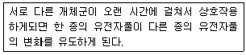
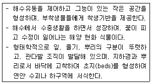
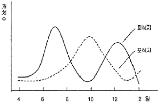
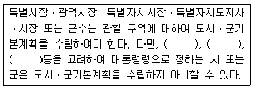
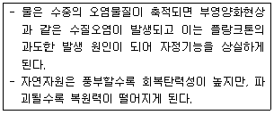
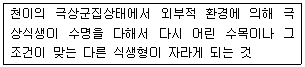
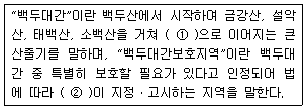
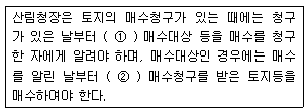
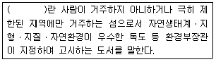
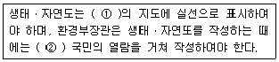

자연생태복원기사(구) (2014-08-17 기출문제)
1과목: 환경생태학개론
1. 수온의 계절적 변동에 따라 구분한 호소의 수직적 층 중 여름이 되면 상층부는 수온이 높고 깊은 곳에서는 낮으며 중간에서 수온이 급격하게 저하되는 층을 무엇이라 하는가?
- 표수층(epilimnion)
- 수온약층(thermocline)
- 심수층(hypolimnion)
- 온도성층(thermal stratification)
(정답률: 79%)

2. 암반, 자갈밭, 건조한 사구 등과 같은 곳에서 진행되는 천이는?
- 담수천이
- 호소천이
- 건생천이
- 습생천이
(정답률: 87%)
3. 생물다양성 유지를 위한 보호지구 설정을 위해 흔히 이용하는 도서생물지리 모형(island biogeographical model)의 내용과 거리가 먼 것은?
- 보호지구는 여러 개로 분산시킨다.
- 보호지구는 넓게 조성한다.
- 보호지구는 최대한 서로 가깝게 붙도록 조성한다.
- 보호지구의 형태는 원형이 유리하며, 지구간에 생태통로를 조성한다.
(정답률: 83%)
4. 다음은 무엇을 설명한 것인가?

- 적응
- 공진화
- 생태적지위
- 제한요인
(정답률: 80%)
5. 생물이 필요로 하는 원소가 생물권 내에서 환경 → 생물 또는 생물 → 환경으로 일정한 경로를 거쳐 순환되는 과정을 무엇이라고 하는가?
- 먹이연쇄(food chain)
- 생물지구화학적 순환(biogeochemical cycle)
- 천이(ecological successino)
- 온실효과(greenhouse effect)
(정답률: 83%)
6. 다음 [보기]에서 설명하는 특징을 가지고 있는 해양식물 군락은?

- 퉁퉁마디 군락
- 갈대 군락
- 칠면초 군락
- 거머리말 군락
(정답률: 55%)
7. 바다와 호수에 분포하는 수초의 경우 광은 광합성에 영향을 주고 있다. 이러한 수중의 광조건에 대한 설명으로 옳은 것은?
- 물이 맑은 먼 바다의 보상심도는 100~120m가 된다.
- 식물플랑크톤의 광합성 속도는 수심이 깊어짐에 따라 빨라진다.
- 식물플랑크톤의 보상심도는 상대조도 10%가 되는 수심과 일치한다.
- 보상심도보다 위에 있는 층을 무광층, 아래쪽의 층을 유광층이라 한다.
(정답률: 45%)
8. 유해물질의 해상운송은 국제해사기구(IMO)의 국제해상 위험물질코드(IMDG Code : International Maritime Dangrous Goods Code)에 따라 규제를 받는다. 이에 대한 연결이 바르게 된 것은?
- 유황, 비료 - 액체수송 탱커(liquid-bulk tanker)
- 석유화학물질, 수산화나트륨, 황상-액체수송 탱커(liquid-bulk tanker)
- 농약, 살충제 - 건화물 운반선(dry-bulk carrier)
- 테트라에틸렌, 수산화나트륨, 유황 - 건화물 운반선
(정답률: 65%)
9. 환경적으로 건전하고 지속가능한 발전(ESSD)이 범지구적으로 보편화된 계기는?
- 1992년 “리우지구정산회담”을 기점으로 친환경적 개발을 통한 “지속가능한 사회”로 전환하는 계기가 되었다.
- 1973년 스톡홀롬에서 유엔 산하의 유엔환경계획(UNEP)기구에서 발표하였다.
- 1983년 환경과 개발에 관한 세계 위원회(WCED)에서 발표하였다.
- 1996년 9월 국제표준화기구에 의하여 발효된 ISO 14001 내용에 포함되어 있다.
(정답률: 76%)
10. 해양에서 오염의 정도를 지시해주는 오염지표종에 대한 설명으로 옳지 않은 것은?
- 오염이 극심해지는 최후까지 견딜 수 있다.
- 환경이 회복됨에 따라 점차로 서식밀도가 감소한다.
- 대부분 생활사가 길고, 몸이 크며, 연중산란이 가능한 기회종으로 구성되어 있다.
- 오염의 진행에 따라 다른 종들은 개체수가 감소하고, 지표종은 더 많은 개체수를 보인다.
(정답률: 57%)
11. 열대우림지역의 경계에 존재하는 독특한 유형의 초원으로 다른 열대삼림과는 달리 건조기가 긴 육상생태계는?
- 사막
- 타이가
- 열대사바나
- 온대낙엽수림
(정답률: 81%)
12. 생태계 유형에 따른 현존식생도의 범례 중 “자연식생”에 해당되지 않는 것은?
- 산지산림식생
- 자연초원식생
- 해안염습지식생
- 농경작지식생
(정답률: 82%)
13. 하천은 발원지 상류에서부터 하류인 하구에 이르기까지 생물상이 단계적으로 변하는데, 이 때 종의 수평구조가 나타난다. 또한 시간이 경과함에 따라 서식지나 생물상이 변하게 된다. 이와 같은 현상은?
- 천이계열
- 지리적 천이
- 지사적 천이
- 타발 천이
(정답률: 75%)
14. 다음의 그래프는 군집의 상호작용 중 무엇을 설명할 수 있는 그래프인가?

- 중립(Neutralism)
- 편리(Commensalism)
- 포식(Predation)
- 상리(Mutualism)
(정답률: 73%)
15. 다음 부영양화의 피해에 관한 설명으로 가장 거리가 먼 것은?
- 어패류 폐사
- 악취 발생
- 수중생태계 파괴
- 조류의 이상번식에 의한 투명도 증가
(정답률: 81%)
16. 지구의 기후변화와 열섬효과 등 인류생존에 큰 영향을 주고 있는 오존층을 보호하려는 노력을 하고 있다. 다음 중 오존층은 대기의 어디에 위치하는가?
- 대류권
- 성층권
- 전리권
- 외기권
(정답률: 84%)
17. 온대지역의 삼림을 벌채한 후, 불을 놓아 참억새로 초원화가 성립된 초지에 소나 말과 같은 초식동물을 방목했을 경우 천이의 진행 방향은?
- 참억새가 감소되고 새의 군락을 거쳐 잔디 초원으로 변한다.
- 개망초 등의 잡초군락을 거쳐 관목군락에 이어 상수리 나무림과 같은 삼림으로 재차 이행한다.
- 참억새는 점차 감소하고 참싸리와 큰까치수염, 양지사초등이 크게 증가한다.
- 참억새군락에 이어 재생력과 답압에 강한 잔디초원을 거쳐 참싸리, 고사리, 그늘사초 등의 고경성 초원이 성립한다.
(정답률: 40%)
18. 하천생태계의 조사방법 중 틀린 것은?
- 하천내로 들어가 발에 느껴지는 감촉을 확인하여 하상의 경도, 유기성의 저질의 퇴적상태 등을 확인한다.
- 하천 바닥의 돌을 집어보아 돌 바닥의 색깔을 관찰하여 혐기적으로 유기물의 유하량이 많은 지를 조사한다.
- 비가 내리지 않았을 경우 물속에 수초가 살고 있는지를 조사하여 유량의 변동이 많고 적음을 확인한다.
- 수생곤충은 이동성이 많아 수질의 판정에 불합리하기 때문에 지표종으로 이용하기가 어렵다.
(정답률: 79%)
19. 다음 중 호소의 산성화와 어류의 개체수 감소를 초래하는 것은?
- 산성비
- 지구온난화
- 온실효과
- 방사능 동위원소
(정답률: 75%)
20. 식물체의 생산성이 가장 적은 양으로 존재하는 영양물질의 양에 의하여 결정된다는 법칙은?
- 보일의 법칙
- 샤를의 법칙
- Liebig의 최소량 법칙
- Shelford의 내성 법칙
(정답률: 85%)
2과목: 환경계획학
21. 지속가능성의 단계를 「아주 약한 지속가능성」, 「약한 지속가능성」, 「강한 지속가능성」으로 구분할 수 있는데 정책, 경제, 사회분야의 설명이 모두 올바르게 연결된 것은?
- 약한 지속가능성 : 공식적 정책통합과 적절한 목표 설정 - 경제적 수단과 미미한 연계 - 지역발전을 위한 지방정부의 주도적 역할
- 약한 지속가능성 : 확고한 정책통합과 강력한 국제협약 - 완벽한 경제적 가치 - 미래 비전에 입각한 공공 환경 교육 도입
- 아주 약한 지속가능성 : 공식적 정책통합과 적절한 목표 설정 - 미시경제적 인센티브의 근본적 재편 - 지역발전을 위한 지방정부의 주도적 역할
- 강한 지속가능성 : 확고한 정책통합과 강력한 국제협약 - 산업 및 국가적 차원의 녹색계정 확립 - 환경교육 프로그램 체계화
(정답률: 64%)
22. 우리나라 습지보전법과 시행령에서 제시된 습지보전ㆍ이용 시설에 해당되지 않는 것은?
- 습지를 연구하기 위한 연구시설
- 습지생태를 관찰하기 위한 시설
- 습지오염을 방지하기 위한 시설
- 습지를 복원하기 위한 시설
(정답률: 50%)
23. 지속가능성의 달성을 위해 국토 및 지역차원에서의 환경계획 수립시 고려될 수 있는 사항이 아닌 것은?
- 인간의 활동은 환경적 고려사항에 의해서 최대한 제한한다.
- 환경에 대한 우리의 부주의의 대가를 차세대가 치르도록 해서는 안된다.
- 재생이나 순환가능한 물질을 사용하고 폐기물을 최소화 함으로써 자원을 보전한다.
- 프로그램 및 정책에 대한 이행 및 관리책임을 가장 낮은 수준의 민간에서 맡도록 해야 한다.
(정답률: 68%)
24. 환경정책기본법 안에서 국가환경종합계획의 수립시 포함해야 할 사항이 아닌 것은?
- 환경의 현황 및 전망
- 국토종합 계획상의 개발방향에 따른 환경오염과 환경훼손의 정도에 관한 사항
- 인구ㆍ산업ㆍ경제ㆍ토지 및 해양의 이용 등 환경변화 여건에 관한 사항
- 환경오염원ㆍ환경오염도 및 오염물질 배출량의 예측과 환경오염 및 환경훼손으로 인한 환경의 질 변화 전망
(정답률: 37%)
25. 다음 조시기본계획의 수립권자와 대상지역에 관한 설명 중 ( )안에 들어갈 내용이 아닌 것은?

- 시 또는 군의 위치
- 인구의 규모
- 보전지역의 면적
- 인구감소율
(정답률: 28%)
26. 시민참여형 환경계획의 하나인 옴부즈만 제도로 기대할 수 있는 기능이 아닌 것은?
- 국민의 권리구제
- 민주적 행정통제와 개혁
- 산-관-학-민의 긴밀한 연계를 통한 환경보전기술의 개발
- 사회적 이슈의 제기 및 행정정보 공개
(정답률: 49%)
27. 다음 바젤협약(Basel Convention)과 관련된 내용 중 옳지 않은 것은?
- 우리나라도 1994년 가입하였다.
- 리우환경회담에서 결정하였다.
- 유해 폐기물의 국가간 이동금지에 대한 협약이다.
- 유해페기물의 국가간 이동뿐만 아니라 자국내의 폐기물 발생을 최소화 한다.
(정답률: 62%)
28. 생태건축계획에서 수동적 에너지 손실 방지 및 보존을 고려하기 위한 내용으로 거리가 먼 것은?
- 지형을 고려한 입지 선정
- 건물의 형태화 연결성
- 건물의 방향
- 건물 사용자
(정답률: 68%)
29. 토지적성평가에 대한 설명 중 맞지 않는 것은?
- 평가체계 Ⅰ에서는 초지적성등급을 5개 등급으로 분류한다.
- 평가체계 Ⅱ에서는 초지적성등급을 3개 등급으로 분류한다.
- 평가체계 Ⅰ은 도시개발사업 및 지구단위계획을 입안하는 경우에 실시한다.
- 평가체계 Ⅱ는 용도지역, 용도지구를 지정하거나 변경학 위한 계획을 입안하는 경우에 실시한다.
(정답률: 38%)
30. 참여형 환경계획에 대한 설명으로 옳은 것은?
- 시민참여는 시대ㆍ국가는 달라도 참여형태는 동일하다.
- 시민참여는 1960년 이전부터 참여형 민주주의 발전과 시민의식의 성숙과 더불어 보급된 개념이다.
- 시민참여는 계획에 직ㆍ간접으로 이해관계가 있는 시민들만이 주도적으로 참여하는 방법이다.
- 환경정책 수립이나 계획과정이 정부주도의 하향식, 밀실구조에서 탈피하여 이해 당사자가 공동이익을 추구함으로서 환경의 질을 높이기 위한 과정이다.
(정답률: 56%)
31. 환경과 인간활동의 지속성을 유지하기 위해서 공간이나 시간적으로 경계를 설정하고 비용 또는 노력을 먼 곳이나 장래로 미루지 않는 자세로 도시나 사회, 경제구조를 유지해가고자 하는 것은 무엇과 관련된 내용인가?
- 무한성의 인식
- 환경용량이론
- 환경윤리와 도덕
- 생태적 수용능력
(정답률: 37%)
32. 다음 중 생태계의 생물다양성과 관련이 없는 것은?
- 유전적 다양성
- 종 다양성
- 생태계 다양성
- 작물의 다양성
(정답률: 62%)
33. 다음 중 사회기반형성 차원에서의 환경계획 내용과 거리가 먼 것은?
- 토지이용계획
- 에너지계획
- 시민참여의 제도적 장치
- 계획부서와 환경부서간의 통합 조정가능
(정답률: 42%)
34. 다음 중 생태관광의 기본원칙으로 가장 거리가 먼 것은?
- 자연환경의 보전
- 관광객 편의성의 증진
- 관광객의 환경인식 제고
- 지역주민의 경제적, 사회적, 환경적 편익의 보장 및 증대
(정답률: 65%)
35. 다음의 내용이 설명하는 환경의 특성은?

- 시차성
- 광역성
- 탄력성과 비가역성
- 상호관련성
(정답률: 63%)
36. 도시관리계획의 취락지구를 용도에 따라 세분한 것으로 개발제한구역안의 취락을 정비하기 위하여 필요한 지구는?
- 자연취락지구
- 집단취락지구
- 시설취락지구
- 농촌취락지구
(정답률: 50%)
37. 환경부장관이 정하는 생태마을의 지정조건에 적합한 마을은?
- 생태ㆍ경관보전지역 안에 있는 마을
- 주민들이 생태적인 삶을 추구하는 마을
- 산림기본법에서 산촌진흥지역으로 지정된 마을
- 마을 경계가 유기농을 중심으로 운영되는 마을
(정답률: 54%)
38. 다음의 토지관련 주제도 중 전 국토를 대상지역으로 하지 아니하고 주로 도시화지역을 대상으로 구축하는 주제도는?
- 토지특성도
- 토지이용현황도
- 생태자연도
- 토지피복지도
(정답률: 38%)
39. 국가환경종합계획과 관련된 설명으로 틀린 것은?(오류 신고가 접수된 문제입니다. 반드시 정답과 해설을 확인하시기 바랍니다.)
- 국가환경종합계획에는 자연환경의 현황 및 전망에 관한 사항이 포함된다.
- 수립된 국가환경종합계획은 국무회의의 심의를 거쳐 확정된다.
- 환경부장관은 관련 규정에 의하여 확정된 국가환경종합계획의 종합적ㆍ체계적 추진을 위하여 3년마다 환경보전중기종합계획을 수립하여야 한다.
- 환경부장관은 관계 중앙행정기관의 장과 협의하여 국가차원의 환경보전을 위한 종합계획을 10년 마다 수립하여야 한다.
(정답률: 49%)
40. 어떤 일정한 생명집단 및 사회 속에서 3차원적이고 지역적으로 다른 것들과 구분되는 생명공간 단위에 해당하는 것은?
- 비오톱(biotope)
- 식생(vegetation)
- 종(species)
- 개체군(population)
(정답률: 68%)
3과목: 생태복원공학
41. 식물종자에 의한 유전자 이동의 방법 중 동물에 의한 산포(散布)방법이 아닌 것은?
- 기계형산포
- 부착형산포
- 피식형산포
- 저식형산포
(정답률: 72%)
42. 습지를 복원하고자 할 때 고려사항으로 맞는 것은?
- 습지의 형태는 단순할수록 좋다.
- 호안의 경사는 급할수록 식물 성장에 좋다.
- 수심과 수위변동은 습지식물 분포와 무관하다.
- 습지의 규모는 목표종의 생태적 특성과 개체수를 고려하여 접근한다.
(정답률: 74%)
43. 도시생태계 내 도시림의 식생복원 방법으로 적합하지 않은 것은?
- 자연식생녹지는 자생수종의 생태적 특성을 토대로 훼손지 복구 및 복원을 중점적으로 검토해야 한다.
- 자연식생은 외래종 식재나 인위적인 녹지관리를 지양하고, 천이가 진행될 수 있도록 유도한다.
- 인공림에서 자연식생으로 천이가 진행되는 녹지는 외해종을 제거하고, 자생종만을 남긴다.
- 인공조림녹지는 도시섬화하여 자생종의 종자전파가 어려우므로 천이계열상 발전기에 속하는 종을 도입한다.
(정답률: 49%)
44. 하천 둑을 밑폭 5m, 위폭 2m, 높이 2m의 50m 연장 둑을 조성하였을 때 취토 토사량은?
- 250m3
- 300m3
- 350m3
- 400m3
(정답률: 47%)
45. 다음 중 질소 고정작용을 하는 식물에서 고정량이 가장 큰 것은?
- 칡
- 땅콩
- 오리나무
- 알파파
(정답률: 39%)
46. 생태복원 지역의 안내시설물 설치기준으로 잘못된 것은?
- 안내시설물은 복원지역의 입구에 설치하여 많은 탐방객이 보기 쉽게 한다.
- 안내시설물의 형태는 주변 경관과 조화되도록 한다.
- 안내시설물의 재료는 국내에서 생산되는 목재를 사용한다.
- 안내시설물의 색채는 적색 및 흰색 계통을 많이 사용한다.
(정답률: 56%)
47. 다음 중 폐광에서 생겨나는 훼손의 유형이 아닌 것은?
- 노출된 지형
- 광미(tailing, 鑛尾)
- 지반침하
- 여울(riffle)
(정답률: 68%)
48. 야생화 초지의 복원기법에 대한 설명으로 적합하지 않은 것은?
- 야생화 초지의 설계 요소로는 색깔, 질감, 식물의 형태, 층위 등이 있다.
- 야생화 초지에 영향을 미치는 주요 요소는 토양, 광량, 천이 등이 있다.
- 파종은 춘파는 10~11월에 파종하고, 추파는 3~4월이 적합하다.
- 야생초화류 식재시공 시 이용할 식물재료는 규격묘를 사용해야 한다.
(정답률: 25%)
49. 강우에 의한 훼손지의 침식현상 중 비탈면 상하방향의 물길, 또는 자연적인 비탈면 요부에 표면유거수가 집수되어 유하세력이 점차 증대됨에 따라 하나의 분명한 작은 물길이 형성되는 침식은 무엇인가?
- 누구침식(rill erosion)
- 구곡침식(gully erosion)
- 면상침식(surface erosion)
- 야계침식(torrent erosion)
(정답률: 50%)
50. 녹화식물의 근계에 대한 설명으로 틀린 것은?
- 이끼류는 근계가 상대적으로 중요하지 않다.
- 근계는 암반의 균열을 크게 하거나 주위를 산화시키며, 미생물상이나 동물상에 영향을 미친다.
- 식물의 근계는 지상부를 지지하고 토양으로부터 수분과 영양염류를 식물체 내로 흡수하는 역할을 한다.
- 근계는 토양경도가 야마나까(山中)식에서는 26~27mm를 초과하면 근계신장을 기대하기 어렵다.
(정답률: 44%)
51. 토양 비옥도 증진을 위한 시비 방안으로 옳지 않은 것은?
- 질소질 비료를 시비할 때는 석회를 사용하고, 보름 쯤 지난 후 시비하는 것이 좋다.
- 용성인비를 시비할 때는 뿌리 근처에 골을 판 후 시비하는 것이 좋다.
- 비료는 한꺼번에 많이 주지 말고, 여러 번 나누어 주며 특히 비료를 많이 저장할 수 있는 유기물을 흙속에 투입한다.
- 토양의 물리성이나 배수성을 좋게 하기 위해 심토를 갈아주는데 초봄에 심토를 간 후 유기물을 많이 주고 경운해 준다.
(정답률: 46%)
52. 토양개량에 쓰이는 자재 중 피트모스에 대한 설명으로 옳지 않은 것은?
- 토양에 사용하면 대공극의 형성에 의한 팽창, 통기성의 확보, 보수기능의 향상이라는 물리적인 개선효과를 기대할 수 있다.
- 양이온교환용량(CEC)이 퇴비에 비해 높다.
- 유기질자재이므로 쉽게 분해되기 어려운 성질을 가지기 때문에 지속성이 있다.
- 일반적으로 pH7 이상의 알카리성을 나타내기 때문에 중화처리를 하지 않아도 된다.
(정답률: 56%)
53. 다음 중 습생초원의 서식중에 해당되지 않는 것은?
- 물억새
- 원추리
- 부처꽃
- 노루오줌
(정답률: 61%)
54. 압축공기로 콘크리트 또는 모르타르를 시공면에 뿜어붙이는 공법은?
- 숏크리트
- 레디믹스트 콘크리트
- 경량골재 콘크리트
- 섬유보강 콘크리트
(정답률: 59%)
55. 자연형 하천복원에 활용하는 야자섬유 재료의 규격 및 설치기준으로서 틀린 것은?
- 야자섬유 두루마리의 규격은 길이 4m×지름 0.3m 크기의 실린더형을 표준으로 한다.
- 야자섬유망의 규격은 폭 1m×길이 10m를 표준으로 한다.
- 야자섬유로프는 100% 야자섬유의 분순물을 제거한 후 두께 5~6mm로 꼬아 만든다.
- 야자섬유망은 사면에 철근 착지핀을 1개/m2 이상 박아 견고히 설치한다.
(정답률: 48%)
56. 해안의 유형의 대한 설명 중 잘못된 것은?
- 모래갯벌은 바닥이 주로 모래질로 되어 있으며 입자의 평균크기가 0.2~0.7cm 정도이고, 유기물 함량이 1~2%정도로 적으며, 바지락, 동죽, 백합 등을 볼 수 있다.
- 펄 갯벌은 펄 함량이 70%이상을 차지하는 정도 이고, 입자가 치밀하고 단단하여 조사시 잘 빠지지 않으며, 고막, 가리막 등의 조개 등이 서식한다.
- 자갈해안은 암편이나 다양한 크기의 퇴적물의 파편으로 이루어져 있고, 자갈의 직경은 2mm 이상의 것으로 구성되며, 서식하는 종들은 낮은 서식밀도를 나타난다.
- 암반해안은 파도에 의한 침식으로 암반이 노출된 해안으로, 남해안은 조간대현상이 뚜렷하고 생물상도 풍부하지만 서해안은 조수간만의 차이가 크고 물이 탁하여 생물상도 빈약하다.
(정답률: 39%)
57. 도시생태계 복원대책으로 틀린 것은?
- 물순환 환경의 개선
- 물질순환의 개선
- 열섬현상 증가
- 에너지 사용억제
(정답률: 74%)
58. 채석장에서 돌을 뜰 때 앞면, 길이(뒷길이), 뒷면, 접촉면, 허리치기의 치수를 특별한 규격에 맞도록 지정하여 만든 쌓기용 석재는?
- 각석 및 판석
- 마름돌
- 견치돌
- 사고석
(정답률: 63%)
59. 지각을 구성하고 있는 8대 주요원소가 아닌 것은?
- 산소
- 규소
- 황
- 알루미늄
(정답률: 39%)
60. 인간에 의한 생태계 단편화의 영향에 대해 설명한 것으로 올바른 것은?
- 서식처의 가장자리 면적을 급격히 증가시켜 종수의 변화가 없다.
- 새로운 생태적 변화에 노출되어 식물과 동물의 개채군 크기는 늘어난다.
- 개체군의 크기는 감소하고 사멸될 확률은 증가한다.
- 내부의 서식처는 늘어나고 가장자리 서식처는 줄어들고 안정된 생태계에 서식하는 종이 증가한다.
(정답률: 67%)
4과목: 경관생태학
61. 다음 중 비오톱의 보호 및 조성에 있어서의 원칙에 해당하지 않는 것은?
- 비오톱 조성시 동일한 기본면적단위를 우선적으로 적용한다.
- 조성 대상지 본래의 자연환경을 복원하고 보전한다.
- 비오톱 조성의 설계시 이용소재는 그 지역 본래의 것으로 한다.
- 회복, 보전할 생물의 계속적 생존을 위하여 이에 상응하는 수질의 용수를 확보하도록 한다.
(정답률: 66%)
62. 경관의 이질성(heterogeneity)에 대한 정의가 맞는 것은?
- 경관요소의 다양한 구성 정도
- 경관의 간섭에 대해 적응성이 높은 성질
- 경관의 간섭에 대해 저항하는 정도
- 커다란 서식처가 2개 이상의 작은 서식처로 나누어지는 현상
(정답률: 39%)
63. 댐 건설로 인한 경관적 영향으로 옳지 않은 것은?
- 유속 증가
- 식생 유실
- 시각적 질의 변화
- 대규모 질성토 비탈면 형성
(정답률: 62%)
64. 환경보전지역(서식처)을 설정하는데 필요한 기준으로 가장 부적합한 것은?
- 희귀성
- 다양성
- 면적
- 경제성
(정답률: 57%)
65. 지리정보체계(GIS)의 기능적 요소가 아닌 것은?
- 자료의 전처리
- 자료관리
- 조정 및 분석
- 플로트
(정답률: 58%)
66. 굴곡에 의한 생태적 효과 중 조각을 관통 할 때 좁고 우묵 들어간 곳으로 집중되는 효과를 무엇이라고 하는가?
- 반도 효과(peninsula effect)
- 깔때기 효과(funnel effect)
- 벤투리 효과(venturi effect)
- 울타리 효과(drift-fence effect)
(정답률: 36%)
67. 한반도 해안 경관의 설명으로 옳지 않은 것은?
- 동해안은 융기해안으로서 해안선이 단조롭다.
- 동해안은 주로 조석(tide)이 모래를 옮겨와 사빈해안을 만들었다.
- 서해안은 갯벌이 매우 잘 발달되어 있다.
- 서해안에 발달한 사구는 강한 서풍에 의해 형성된 것이다.
(정답률: 57%)
68. 다음 중 경관생태학에서 주로 다루지 않은 것은?
- 시간에 따라 바뀌는 경관 모자이크 생태 기능
- 공간요소 사이의 에너지, 영양염류, 생물종의 흐름
- 생태계 사이의 공간적 상호관계
- 독성물질의 이동 경로
(정답률: 70%)
69. 경관생태학은 경관의 구조, 기능 변화에 중점을 둔 연구영역이다. 다음 중 경관생태학적 관점에서 고려해야 할 요소로 맞는 것은?
- 경관모자이크(Landscape Mosaic)는 동질적(homogeneous)인 공간의 집합이며 종, 에너지, 물질의 여러 가지 분포가 경관의 구조를 결정한다.
- 경관의 코리더(corridor), 매트릭스(matrix), 패치(patch)를 통한 동ㆍ식물의 이동과 교환은 경관의 동질성을 보다 높여준다.
- 경관모자이크가 안정된 것은 생체량(biomass)이 존재하여 물리적으로 시스템이 불안정되어 있는 경우, 혹은 생체량이 작은 경우로 교환으로부터의 회복이 늦은 경우, 반대로 생체량이 커서 교환에 대한 저항성이 매우 낮은 경우의 세 가지이다.
- 경관모자이크(Landscape Mosaic)의 구조는 중간정도의 교란(攪亂 : disturbanae)을 받으면 이질성을 높여준다.
(정답률: 33%)
70. 산림의 자연성을 파악하는 도면으로 자연생태 및 환경적 가치를 판단할 수 있는 지표로서 식생과 토지이용현황에 따라 산림공간의 상태를 등급화한 도면은 무엇인가?
- 녹지자연도
- 임상도
- 현존식생도
- 산지이용구분도
(정답률: 46%)
71. 다음 설명에 해당되는 천이의 유형은?

- 진행적 천이
- 퇴행적 천이
- 순환적 천이
- 자발적 천이
(정답률: 50%)
72. 최소존속개체군(minimum viable population : MVP)의 정의로 맞지 않는 것은?
- 개체수, 환경, 유전자 변화에 의해 결정된다.
- 존속 개체군 이하에 이르면 장기적으로 멸종에 이르게 된다.
- 장기간에 걸쳐 한 개체군을 유지하기 위해 요구되는 최소 개체수이다.
- 큰 규모의 개체군 보다 소규모의 개체군이 유리하다.
(정답률: 66%)
73. 비오톱의 보호를 위해서는 개념 설정이 필요한데 이 개념 설정 항목으로 적합하지 않은 것은?
- 보호를 할 경우 어떤 비오톱이 특히 중요하고, 어느 것이 중요하지 않은가? 인간활동이 우점하는 지역의 확대에 따라 어떤 비오톱의 어느 부분이 종이나 동물군집의 생존에 있어서 결정적인 역할을 하는가?
- 하나의 비오톱 타입 중에는 여러 가지 형태의 비오톱이 포함되지만, 어떤 형태의 비오톱이 다른 것과 비교하여 보호할 필요가 큰 것인가?
- 어떤 형태의 어떠한 특징이 보호할 때에 어떻게 도움이 되며 또한 어떠한 요인을 통하여 이들 특징이 다시 제한되는 것인가? 그것들의 특징은 서로 어떠한 관계를 가지고 있는 것인가?
- 보호의 목적을 위해서는 어떤 정책이나 제한을 일괄적으로 통합하여 적용하는 것이 바람직한가?
(정답률: 44%)
74. 토지피복분류에 주로 사용하는 Landsat TM/ETM+ 영상에 대한 설명으로 알맞은 것은?
- 30m 공간해상도를 갖는 7개의 band로 이루어져 있다.
- Landsat영상을 이용하여 나무의 수종까지 구분이 가능하다.
- 열적외선 band를 이용하여 온도분포를 측정할 수 있다.
- Landst ETM+의 경우 15m 공간해상도의 칼라영상을 포함하고 있다.
(정답률: 38%)
75. 경관생태학 연구의 특징이 아닌 것은?
- 단일생태계를 조사 대상으로 한다.
- 생태단위조각(patch)을 이용하여 정량적인 방법으로 표현한다.
- 인간의 역사 혹은 동물의 생활사 등을 생태학적으로 연구한다.
- 지역 경관의 이론 또는 방법론의 실제적 적용 가능성을 강조한다.
(정답률: 67%)
76. 보전 공간설정을 위한 비오톱 평가 지표들을 가장 바르게 나열한 것은?
- 접근성, 포장율, 층위구조
- 복원능력, 종다양도, 멸종위기종의 출현
- 주거지와의 거리, 멸종위기종의 출현, 복원능력
- 층위구조, 종다양도, 이용빈도
(정답률: 64%)
77. 경관을 이루는 기본적인 단위는 경관요소이며, 크게 3가지로 나눌 수 있다. 이에 포함되지 않는 것은?
- 공간(space)
- 조각(patch)
- 바탕(matrix)
- 통로(corridor)
(정답률: 57%)
78. 문화와 경관생태의 관계를 가장 바르게 설명한 것은?
- 인간의 경험은 문화적 지속가능성에 영향을 미치며 이는 경관생태에 다시 영향을 미친다.
- 인간의 문화는 궁극적으로 자연경관을 훼손하는 부정적인 관계로 요약된다.
- 인문환경의 문화와 경관생태의 자연환경 요소간에서 실제적인 연관성을 찾기 어렵다.
- 경관생태와 문화 모두 비용의 지불로 온전히 보전될 수 있으나 그 비용의 규모는 크지 않다.
(정답률: 66%)
79. 다음 토지변형을 가져오는 요인 중 서식지 내에 구멍이 생기는 현상은?
- 단편화
- 천공화
- 축소
- 마멸
(정답률: 74%)
80. 서식처의 파편화에 의해 국지적으로 멸종 가능성이 높은 종에 속하지 않는 것은?
- 개체군의 크기가 큰 종
- 개체군의 밀도가 낮은 종
- 지리적 분포범위가 좁은 종
- 특이한 생태적 지위를 요구하는 종
(정답률: 64%)
5과목: 자연환경관계법규
81. 자연환경보전법상 용어의 정의로 거리가 먼 것은?
- “소(小)생태계”라 함은 생물다양성을 높이고 야생동ㆍ식물의 서식지간의 이동가능성 등 생태계의 연속성을 높이거나 특정한 생물종의 서식조건을 개선하기 위하여 조성하는 생물서식공간을 말한다.
- “생물다양성”이라 함은 육상생태계 및 수생태계(해양생태계를 제외한다.)와 이들의 복합생태계를 포함하는 모든 원천에서 발생한 생물체의 다양성을 말하며, 종내(種內)ㆍ종간(種間) 및 생태계의 다양성을 포함한다.
- “생태통로”라 함은 오염시설로 인하여 야생동ㆍ식물의 서식지가 연계되는 것을 방지하고 야생동ㆍ식물의 이동등 생태계의 연속성 유지를 위하여 설치하는 자연 구조물의 생태적 공간을 말한다.
- “생태축”이라 함은 생물다양성을 증진시키고 생태계 기능의 연속성을 위하여 생태적으로 중요한 지역 또는 생태적 기능의 유지가 필요한 지역을 연결하는 생태적서식공간을 말한다.
(정답률: 45%)
82. 국토의 계획 및 이용에 관한 법률 시행령상 광역도시계획수립을 위해 그 밖에 대통령령이 정하는 기초조사 사항으로 가장 거리가 먼 것은?
- 국제적 협력강화를 위한 부대시설의 설치
- 기반시설 및 주거수준의 현황과 전망
- 기후ㆍ지형ㆍ자원 및 생태 등 자연적 여건
- 풍수해ㆍ지진 그 밖의 재해의 발생현황 및 추이
(정답률: 54%)
83. 자연환경보전법규상 생태통로의 설치기준으로 옳지 않은 것은?
- 생태통로의 길이가 길수록 폭을 좁게 설치한다.
- 주변의 소음ㆍ불빛ㆍ오염물질 등 인위적 영향을 최소화하기 위하여 생태통로 양쪽에 차단벽을 설치하되, 목재와 같이 불빛의 반사가 적고 주변환경에 친화적인 소재를 사용한다.
- 배수구 일부 지점에 경사가 완만한 탈출구를 설치하여 작은 동물의 이동이 용이하도록 하고, 미끄럽지 아니한 재질을 사용한다.
- 생태통로 입구와 출구에는 원칙적으로 현지에 자생하는 종을 식수하며, 토양 역시 가능한 한 공사 중 발생한 절토를 사용한다.
(정답률: 72%)
84. 자연환경보전법규상 위임업무 보고사항 중 “생태ㆍ경관보전지역 안에서의 행위중지ㆍ원상회복 또는 대체자연의 조성 등의 명령실적”의 보고 횟수 기준은?
- 수시
- 연 1회
- 연 2회
- 연 4회
(정답률: 48%)
85. 다음은 백두대간 보호에 관한 법률상 용어의 뜻이다. ( )안에 가장 적합한 것은?

- ① 지리산, ② 환경부장관
- ① 지리산, ② 산림청장
- ① 한라산 ② 환경부장관
- ① 한라산, ② 산림청장
(정답률: 60%)
86. 산지관리법에 따르면 다른 법률에 따라 산지를 특정용도로 이용하기 위하여 지역ㆍ지구 및 구역 등으로 지정 또는 결정하고자 하는 때에는 산림청장 등과 미리 협의하여야 한다. 이를 “보전목적”과 “개발목적”으로 이용하기 위한 지역 등으로 구분할 때 다음 중 “개발목적”으로 이용하기 위한 협의 대상지역 등에 해당하는 것은?
- 수도법에 따른 상수원보호구역
- 토양환경보전법에 따른 토양보전대책지역
- 농어촌정비법에 따른 한계농지등 정비지구
- 소하천정비법에 따른 소하천구역 및 소하천예정지
(정답률: 44%)
87. 개발제한구역의 지정 및 관리에 관한 특별조치법규상 개발제한구역의 경계선을 표시하기 위한 경계표석의 규격 및 설치기준으로 틀린 것은?
- 표석재료는 강화플라스틱(FRP), 표석의 색은 녹색으로 한다.
- 개발제한구역 글씨는 음각 후 압출마감(흑색)하고, 번호(백색)는 도색마감으로 부착한다.
- 강화플라스틱과 콘크리트로 된 기초가 일체가 되도록 설치한다.
- 글자체 : 고딕체, 글자색 : 녹색(pantone 370C), 흰색(White 100%), 검은색(Black 100%)으로 한다.
(정답률: 39%)
88. 다음은 백두대간 보호에 관한 법률 시행령상 토지등의 매수청구 절차에 관한 사항이다. ()안에 가장 적합한 것은?

- ① 15일 이내에, ② 30일 이내에
- ① 30일 이내에, ② 1년 이내에
- ① 60일 이내에, ② 1년 이내에
- ① 60일 이내에, ② 3년 이내에
(정답률: 44%)
89. 생물다양성 보전 및 이용에 관한 법률상 국외반출승인을 받아야 하는 대상 생물자원이지만 승인을 받지 아니하고 반출승인대상 생물자원을 국외로 반출한 자에 대한 벌칙기준은?
- 3년 이하의 징역 또는 3천만원 이하의 벌금에 처한다.
- 2년 이하의 징역 또는 2천만원 이하의 벌금에 처한다.
- 1년 이하의 징역 또는 1천만원 이하의 벌금에 처한다.
- 5백만원 이하의 벌금에 처한다.
(정답률: 40%)
90. 국토의 계획 및 이용에 관한 법률상 각 용도지구에 관한 설명으로 옳지 않은 것은?
- 한도지구 : 쾌적한 환경조성 및 토지의 고도이용과 그 증진을 위하여 건축물의 높이의 최저한도 또는 최고한도를 규제할 필요가 있는 지구
- 보존지구 : 문화재, 중요 시설물 및 문화적ㆍ생태적으로 보존가치가 큰 지역의 보호와 보존을 위하여 필요한 지구
- 방재지구 : 풍수해, 산사태, 지반의 붕괴, 그 밖의 재해를 예방하기 위하여 필요한 지구
- 개발진흥지구 : 주거기능ㆍ상업기능ㆍ공업기능ㆍ유통물류기능ㆍ관광기능ㆍ휴양기능 등을 집중적으로 개발ㆍ정비할 필요가 있는 지구
(정답률: 53%)
91. 습지보전법상 습지보호지역으로 지정ㆍ고시된 습지를 공유수면 관리 및 매립에 관한 법률에 따른 면허없이 매립한 자에 대한 벌칙기준으로 옳은 것은?
- 5년 이하의 징역 또는 3천만원 이하의 벌금에 처한다.
- 3년 이하의 징역 또는 2천만원 이하의 벌금에 처한다.
- 2년 이하의 징역 또는 1천만원 이하의 벌금에 처한다.
- 1년 이하의 징역 또는 5백만원 이하의 벌금에 처한다.
(정답률: 52%)
92. 독도 등 도서지역의 생태계 보전에 관한 특별법상 용어의 뜻이다. ( )안에 알맞은 용어는?

- 무인도서
- 우수도서
- 지정도서
- 특정도서
(정답률: 48%)
93. 농지법령상 신고 또는 고발사항에 대한 포상금 지급기준(건당)으로 옳지 않은 것은?
- 속임수나 그 밖의 부정한 방법으로 농지취득자격증명을 발급받은 자는 10만원이다.
- 용도변경의 승인을 받지 아니하고 전용된 토지를 다른목적으로 사용한 자는 60만원이다.
- 허가를 받지 아니하고 농지를 전용하거나 속임수나 그 밖의 부정한 방법으로 농지전용허가를 받은 자는 50만원이다.
- 농업진흥구역 및 농업보호구역에서의 행위제한을 위반한 자는 30만원이다.
(정답률: 30%)
94. 산지관리법상 산지전용ㆍ일시사용제한지역으로 지정할 수 있는 산지로 가장 거리가 먼 것은?
- 대통령령으로 정하는 주요 산줄기의 능선부로서 자연경관 및 산림생태계의 보전을 위하여 필요하다고 인정되는 산지
- 송이버섯과 같은 중요한 임산물 생산을 위해 보전이 필요한 산지로서 산림청장이 정하는 산지
- 산사태 등 재해발생이 특히 우려되는 산지로서 대통령령으로 정하는 산지
- 명승지, 유적지, 그 밖에 역사적ㆍ문화적으로 보전할 가치가 있다고 인정되는 산지로서 대통령령으로 정하는 산지
(정답률: 58%)
95. 다음은 자연환경보전법상 생태ㆍ자연도에 관한 설명이다. ( )안에 알맞은 것은?

- ① 5만분의 1 이상, ② 7일 이상
- ① 5만분의 1 이상, ② 14일 이상
- ① 2만 5천분의 1 이상, ② 7일 이상
- ① 2만 5천분의 1 이상, ② 14일 이상
(정답률: 58%)
96. 야생생물 보호 및 관리에 관한 법률 시행령상 생물자원의 분류ㆍ보전 등에 관한 관련 전문가와 가장 거리가 먼 것은?
- 생물자원 관련 분야의 학사학위 이상 소지자로서 해당 분야에서 3년 이상 종사한 사람
- 생물자원 관련 분야의 석사학위 이상 소지자로서 해당 분야에서 1년 이상 종사한 사람
- 「국가기술자격법」에 따른 자연환경기사
- 「국가기술자격법」에 따른 생물분류기사
(정답률: 70%)
97. 환경정책기본법령상 오존(O3)의 대기환경기준(ppm)으로 옳은 것은? (단, 8시간 평균치)
- 0.02 이하
- 0.03 이하
- 0.⑤ 이하
- 0.06 이하
(정답률: 60%)
98. 농지법상 상속으로 농지를 취득한 자로서 농업경영을 하지 아니하는 자는 그 상속 농지 중에서 얼마까지만 소유할 수 있는가?
- 총 1천 제곱미터까지
- 총 5천 제곱미터까지
- 총 1만 제곱미터까지
- 총 5만 제곱미터까지
(정답률: 50%)
99. 환경정책기본법령상 해역의 생태기반 해수수질 기준에서 Ⅱ등급(좋음)의 수질평가 지수값(Water Quality Index)은?
- 10~13
- 15~23
- 24~33
- 34~46
(정답률: 39%)
100. 환경정책기본법상 환경기준의 설정에 관한 사항으로 옳지 않은 것은?
- 국가는 환경기준을 설정하여야 하며, 환경 여건의 변화에 따라 그 적정성이 유지되도록 하여야 한다.
- 환경기준은 환경부령으로 정한다.
- 시ㆍ도지사는 지역환경기준을 설정하거나 변경한 경우에는 이를 지체 없이 환경부장관에게 보고하여야 한다.
- 시ㆍ도는 해당 지역의 환경적 특수성을 고려하여 필요하다고 인정할 때에는 해당 시ㆍ도의 조례로 환경기준보다 확대ㆍ강화된 별도의 지역환경기준을 설정 또는 변경할 수 있다.
(정답률: 44%)